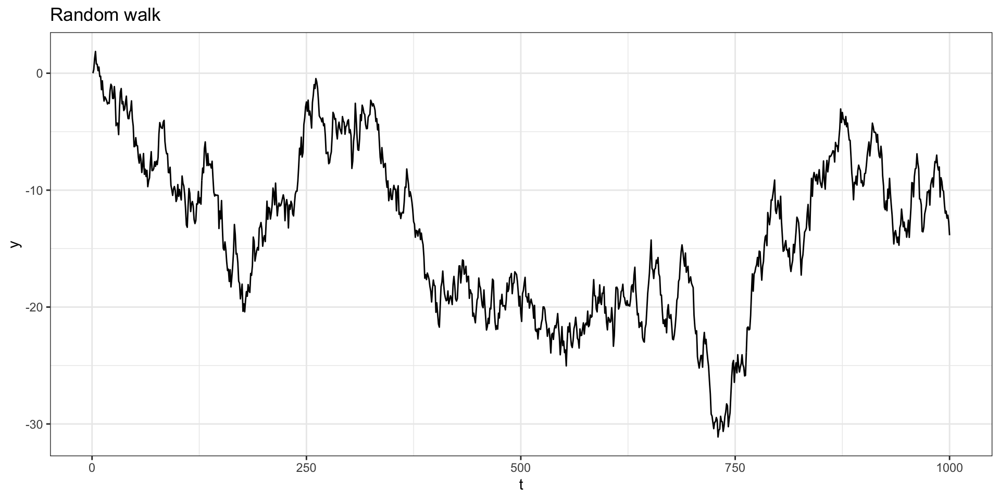
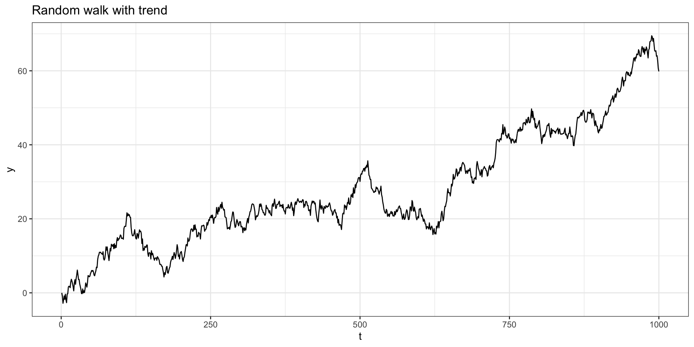
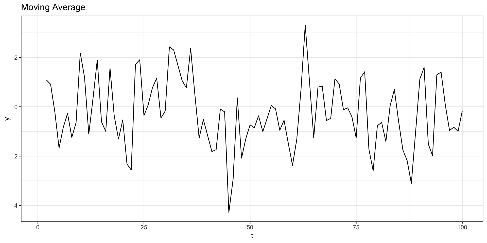
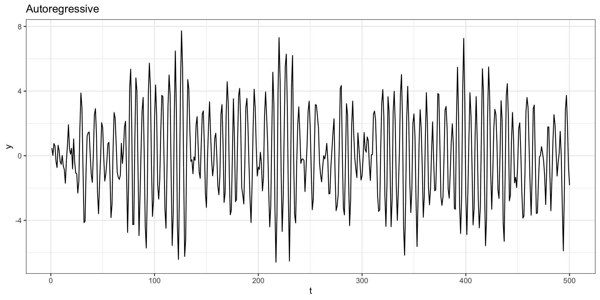

# A tibble: 176 × 2
date sales
<dbl> <dbl>
1 1980 15136
2 1980. 16733
3 1980. 20016
4 1980. 17708
5 1980. 18019
6 1980. 19227
7 1980. 22893
8 1981. 23739
9 1981. 21133
10 1981. 22591
# … with 166 more rowsLecture 07
\[ E(X) = \begin{cases} \sum_x x \cdot P(X = x) & \text{$X$ is discrete}\\ \int_{-\infty}^{\infty} x \cdot f(x) \; dx & \text{$X$ is continuous} \end{cases} \]
\[ \begin{aligned} Var(X) &= E\Big(\big(X-E(X)\big)^2\Big) = E(X^2)-E(X)^2 \\ &= \begin{cases} \sum_x \big(x - E(X)\big)^2 \cdot P(X = x) & \text{$X$ is discrete}\\ \int_{-\infty}^{\infty} \big(x-E(X)\big)^2 \cdot f(x) \; dx & \text{$X$ is continuous} \end{cases} \end{aligned} \]
\[ \begin{aligned} Cov(X,Y) &= E\Big(\big(X-E(X)\big)\big(Y-E(Y)\big)\Big) = E(XY)-E(X)E(Y) \\ &= \begin{cases} \sum_x \big(x - E(X)\big)\big(y - E(Y)\big) \cdot P(X = x, Y=y) & \text{$X$ is discrete}\\ \int_{-\infty}^{\infty} \int_{-\infty}^{\infty} \big(x-E(X)\big)\big(y-E(Y)\big) \cdot f(x,y) \; dx \; dy & \text{$X$ is continuous} \end{cases} \\ \\ Corr(X,Y) &= \frac{Cov(X,Y)}{\sqrt{Var(X)\,Var(Y)}} \end{aligned} \]
Constant
\(E(c) = c\) if \(c\) is constant
Constant Multiplication
\(E(cX) = cE(X)\)
Constant Addition
\(E(X+c) = E(X)+c\)
Addition
\(E(X+Y) = E(X)+E(Y)\)
Subtraction
\(E(X-Y) = E(X)-E(Y)\)$
Multiplication
\(E(XY) = E(X)\,E(Y)\)
if \(X\) and \(Y\) are independent
Constant
\(Var(c) = 0\) if \(c\) is constant
Constant Multiplication
\(Var(cX) = c^2~Var(x)\)
Constant Addition
\(Var(X+c) = Var(X)\)
Addition
\(Var(X+Y) = Var(X)+Var(Y)\)
if \(X\) and \(Y\) are independent.
Subtraction
\(Var(X-Y) = Var(X)+Var(Y)\)
if \(X\) and \(Y\) are independent.
Constant
\(Cov(X,c) = 0\) if \(c\) is constant
Identity
\(Cov(X,X) = Var(X)\)
Symmetric
\(Cov(X,Y) = Cov(Y,X)\)
Constant Multiplication
\(Cov(aX, bY) = ab ~ Cov(X,Y)\)
Constant Addition
\(Cov(X+a, Y+b) = Cov(X,Y)\)
Distribution
\(Cov(aX+bY,cV+dW) = ac~Cov(X,V) + ad~Cov(X,W)+bc~Cov(Y,V)+bd~Cov(Y,W)\)
A stocastic process (i.e. a time series) is considered to be strictly stationary if the properties of the process are not changed by a shift in origin.
In the time series context this means that the joint distribution of \(\{y_{t_1}, \ldots, y_{t_n}\}\) must be identical to the distribution of \(\{y_{t_1+k}, \ldots, y_{t_n+k}\}\) for any value of \(n\) and \(k\).
Strict stationary is unnecessarily strong / restrictive for many applications, so instead we often opt for weak stationary which requires the following,
The process must have finite variance / second moment \[E(y_t^2) < \infty \text{ for all $t$}\]
The mean of the process must be constant \[E(y_t) = \mu \text{ for all $t$}\]
The cross moment (covariance) may only depends on the lag (i.e. \(t-s\) for \(y_t\) and \(y_s\)) \[Cov(y_t,y_s) = Cov(y_{t+k},y_{s+k}) \text{ for all $t,s,k$}\]
When we say stationary in class we will almost always mean weakly stationary.
For a stationary time series, where \(E(y_t)=\mu\) and \(\text{Var}(y_t)=\sigma^2\) for all \(t\), we define the autocorrelation at lag \(k\) as
\[ \begin{aligned} \rho_k &= Cor(y_t, \, y_{t+k}) \\ &= \frac{Cov(y_t, y_{t+k})}{\sqrt{Var(y_t)Var(y_{t+k})}} \\ &= \frac{E\left( (y_t-\mu)(y_{t+k}-\mu) \right)}{\sigma^2} \end{aligned} \]
this is also sometimes written in terms of the autocovariance function (\(\gamma_k\)) as \[ \begin{aligned} \gamma_k &= \gamma(t,t+k) = Cov(y_t, y_{t+k}) \\ \rho_k &= \frac{\gamma(t,t+k)}{\sqrt{\gamma(t,t) \gamma(t+k,t+k)}} = \frac{\gamma(k)}{\gamma(0)} \end{aligned} \]
Based on our definition of a (weakly) stationary process, it implies a covariance of the following structure,
\[ \boldsymbol{\Sigma} = \left( \begin{matrix} \gamma(0) & \gamma(1) & \gamma(2) & \gamma(3) & \cdots & \gamma(n-1) &\gamma(n) \\ \gamma(1) & \gamma(0) & \gamma(1) & \gamma(2) & \cdots & \gamma(n-2) &\gamma(n-1) \\ \gamma(2) & \gamma(1) & \gamma(0) & \gamma(1) & \cdots & \gamma(n-3) &\gamma(n-2) \\ \gamma(3) & \gamma(2) & \gamma(1) & \gamma(0) & \cdots & \gamma(n-4) &\gamma(n-3) \\ \vdots & \vdots & \vdots & \vdots & \ddots & \vdots & \vdots \\ \gamma(n-1) & \gamma(n-2) & \gamma(n-3) & \gamma(n-4) & \cdots & \gamma(0) & \gamma(1) \\ \gamma(n) & \gamma(n-1) & \gamma(n-2) & \gamma(n-3) & \cdots & \gamma(1) & \gamma(0) \\ \end{matrix} \right) \]
Let \(y_t = y_{t-1} + w_t\) with \(y_0=0\) and \(w_t \sim N(0,1)\).
Is \(y_t\) stationary?
Given these type of patterns in the autocorrelation we often want to examine the relationship between \(y_t\) and \(y_{t+k}\) with the (linear) dependence of \(y_t\) on \(y_{t+1}\) through \(y_{t+k-1}\) removed.
This is done through the calculation of a partial autocorrelation (\(\alpha(k)\)), which is defined as follows:
\[ \begin{aligned} \alpha(0) &= 1 \\ \alpha(1) &= \rho(1) = Cor(y_t,y_{t+1})\\ &~~\vdots \\ \alpha(k) &= Cor(y_t - P_{t,k}(y_t),~ y_{t+k} - P_{t,k}(y_{t+k})) \end{aligned} \]
where \(P_{t,k}(y)\) is the project of \(y\) onto the space spanned by \(y_{t+1},\ldots,y_{t+k-1}\).
Let \(\rho(k)\) be the autocorrelation for the process at lag \(k\) then the partial autocorrelation at lag \(k\) will be \(\phi(k,k)\) given by the Durbin-Levinson algorithm,
\[ \phi(k,k) = \frac{ \rho(k) - \sum_{t=1}^{k-1} \phi(k-1, t) \, \rho(k-t) }{ 1 - \sum_{t=1}^{k-1} \phi(k-1, t) \, \rho(t) } \] where \[ \phi(k,t) = \phi(k-1,t) - \phi(k,k) \, \phi(k-1, k-t) \\ \]
Starting with \(\phi(1,1) = \rho(1)\) we can solve iteratively for \(\phi(2,2), \ldots, \phi(k,k)\).
Let \(y_t = \delta + y_{t-1} + w_t\) with \(y_0=0\) and \(w_t \sim N(0,1)\).
Is \(y_t\) stationary?
Let \(w_t \sim N(0,1)\) and \(y_t = w_{t-1}+w_t\).
Is \(y_t\) stationary?
Let \(w_t \sim N(0,1)\) and \(y_t = y_{t-1} - 0.9 y_{t-2} + w_t\) with \(y_t = 0\) for \(t < 1\).
Australian total wine sales by wine makers in bottles <= 1 litre. Jan 1980 – Aug 1994.
Call:
lm(formula = quad_resid ~ lag_12, data = d_ar)
Residuals:
Min 1Q Median 3Q Max
-12286.5 -1380.5 73.4 1505.2 7188.1
Coefficients:
Estimate Std. Error t value Pr(>|t|)
(Intercept) 83.65080 201.58416 0.415 0.679
lag_12 0.89024 0.04045 22.006 <2e-16 ***
---
Signif. codes: 0 '***' 0.001 '**' 0.01 '*' 0.05 '.' 0.1 ' ' 1
Residual standard error: 2581 on 162 degrees of freedom
(12 observations deleted due to missingness)
Multiple R-squared: 0.7493, Adjusted R-squared: 0.7478
F-statistic: 484.3 on 1 and 162 DF, p-value: < 2.2e-16So, is our EDA suggesting that we fit the following model?
\[ \text{sales}_t = \beta_0 + \beta_1 \, t + \beta_2 \, t^2 + \beta_3 \, \text{sales}_{t-12} + \epsilon_t \]
the model we actually fit is,
\[ \text{sales}_{t} = \beta_0 + \beta_1 \, t + \beta_2 \, t^2 + w_t \] where
\[ w_t = \delta \, w_{t-12} + \epsilon_t \]
Sta 344 - Fall 2022